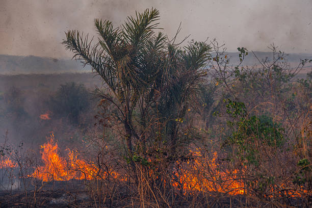

Queima de pastagem
Prática usada para renovar pasto que, sem controle adequado, foge do talhão planejado.
Início / O Fogo
O PROBLEMAO fogo faz parte da história do Cerrado. O problema não é o fogo em si — é o fogo livre, descontrolado, que se espalha sem manejo nem previsão.

O fogo de manejo é usado de forma planejada e controlada — em aceiros, queima prescrita ou práticas tradicionais — respeitando época, vento e umidade.
Já o fogo livre é aquele que se espalha sem controle, seja por acidente, negligência ou propagação de uma queima que fugiu do planejado. É esse tipo de fogo que o Fogo Zero busca prevenir.
Veja como prevenir o fogo livre →Diferente do que muitos imaginam, raios respondem por uma parcela pequena das ocorrências. A maior parte começa por ação direta ou indireta de pessoas.
Prática usada para renovar pasto que, sem controle adequado, foge do talhão planejado.
Bitucas de cigarro, fósforos e lixo aceso jogados às margens de estradas e propriedades.
Queimas realizadas sem aceiro, sem previsão do tempo ou fora da época recomendada.
Descargas elétricas de raios, em proporção bem menor que as causas de origem humana.
Perda de cobertura vegetal e tempo de regeneração natural.
Perda de habitat e risco direto a animais que não conseguem fugir a tempo.
Alteração das propriedades do solo e maior exposição à erosão.
Impacto sobre nascentes e mananciais que abastecem regiões inteiras.
Fumaça e material particulado, com efeitos sobre a saúde respiratória.
Prejuízo a pastagens, cercas, benfeitorias e à segurança de quem trabalha na propriedade.